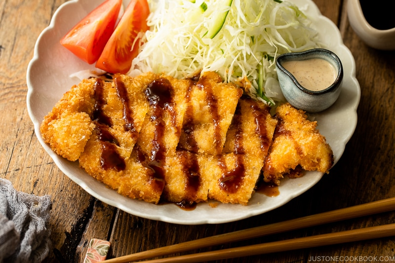

Chicken Katsu

Description
Chicken Katsu is a crispy yet tender panko-covered cutlet
served with tonkatsu sauce and a side of shredded cabbage
salad. They are fun to bulk-prep and freeze or add into
your meal prep.
Serves: 2
Ingredients
- 1 piece boneless, skinless chicken breast
- 1/2 tsp salt
- 1/8 tsp black pepper
- 3 tbs all-purpose flour
- 1 large egg
- 1/2 tbsp neutral oil (egg mix)
- 1 cup panko
- 3 cups neutral oil (deep frying)
Steps
- Prepare the breading station with 3 bowls. 1 -
flour, 2 - egg and oil whisked together (to prevent
meat and breading from separating), 3 - panko.
- Butterfly the chicken, then season with salt and pepper.
- Heat the 3 cups oil in a medium, heavy-bottom pot on
medium-low to low heat until it reaches 340°F.
The oil should be about 1 1/2 inches deep.
- Coat the chicken with the flour, shake off excess.
Do the same with the egg, then press panko on before
shaking off the excess.
- On medium heat, deep-fry the breaded chicken for
3 minutes total, flipping once midway, until
golden-brown.
- Remove and hold vertically over the pot to drain
excess oil. Transfer to a wire rack or paper-lined tray.
Keep it on its side to drain even more excess oil.
- Collect crumbs in the oil with a fine-mesh skimmer
before frying the next piece, to prevent burning and
keep the oil clean.
- Cut the chicken into 1-inch pieces and serve with a
tonkatsu sauce dipping, shredded cabbage and sesame
dressing, and wedges of tomato for colour.